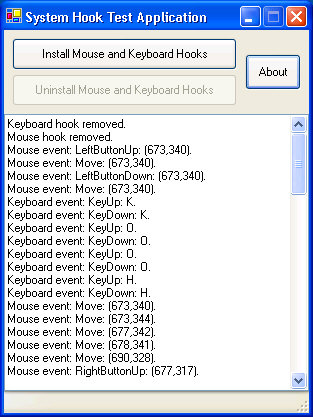

Title: Global System Hooks in .NET Author: Michael Kennedy Email: mkennedy@unitedbinary.com Environment: Visual Studio.NET, Windows XP/2000/2003/98 Keywords: Hook, System Hook, C#, Interop, Delegate, Delegates, NDoc, Unit Test, Unit Testing, HarnessIt, XML Documentation, Managed C++ Level: Intermediate Description: A class library for using *global* system hooks in .NET. Section: .NET SubSection: C# Programming >> PInvoke

This article discusses the use of global system hooks in .NET applications. A reusable class library is developed along the way.
You may have noticed other articles on using system hooks with PInvoke on Code Project or other publications (see background section below). This article is similar to those but there is a significant difference. This article is covers using global system hooks in .NET whereas the other articles cover local system hooks. The ideas are similar but the implementation is different.
In case you are not familiar with the concept of system hooks in Windows, let me state a few brief descriptions:
A system hook allows you to insert a callback function which intercepts certain windows messages (e.g. mouse related messages).
A local system hook is a system hook that is called only when the specified messages are processed by a single thread.
A global system hook is a system hook that is called when the specified messages are processed by any application on the entire system.
There are several good articles which introduce the concept of system hooks. Rather than rehashing the introductory information here I'll simply refer readers to those articles for background information on system hooks. If you're familiar with the concept of system hooks, then you should be able to get everything you need from this article.
About Hooks in the MSDN Library
Cutting Edge - Windows Hooks in the .NET Framework by Dino Esposito
Using
Hooks from C# by Don Kackman
What we are going to cover in this article is extending this information to create a global system hook which is usable in .NET classes. We will develop a class library in C# and a DLL in unmanaged C++ which together will accomplish this goal.
Before we dig into developing this library, let's take a quick look at where we are headed. In this article we will develop a class library that installs global system hooks and exposes the events processed by the hook as a .NET event of our hook class. To illustrate the usage of the system hook classes, we will create a mouse event hook and keyboard event hook in a Windows Forms application written in C#.
The class library can be used to create any type of system hook. There are two
that come pre-built: MouseHook and KeyboardHook. We
have also included specialized versions of these classes called MouseHookExt
and KeyboardHookExt respectively.
Following the model set by those classes you can easily build system hooks for
any of the 15 hook event types in the Win32 API. Also, the entire class library
comes with a compiled HTML help file which documents the classes. Be sure to
look at this help file if you decide to use this library in your applications.
The usage and lifecycle of the MouseHook class is quite simple.
First we create an instance of MouseHook class. We must pass the
application's instance pointer to the constructor.
IntPtr appInstance = GetApplicationInstance(); mouseHook = new MouseHook(appInstance); // mouseHook is a member variable
Next, we wire up the MouseEvent event to a class level method.
mouseHook.MouseEvent += new MouseHook.MouseEventHandler(mouseHook_MouseEvent);
// ...
private void mouseHook_MouseEvent(MouseEvents mEvent, int x, int y)
{
string msg = string.Format("Mouse event: {0}: ({1},{2}).", mEvent.ToString(), x, y);
AddText(msg); // Adds the message to the text box.
}
To start receiving mouse events, simply install the hook.
mouseHook.InstallHook();
To stop receiving events simply uninstall the hook.
mouseHook.UninstallHook();
You can also call Dispose which will uninstall the hook as well.
It is critically important that you uninstall the hook when your application
exits. Leaving system hooks installed will slow message processing for all
applications on the system at best. It could even cause one or more processes
to become unstable. To put it in more technical terms that speaks to the
developer in all of us: It's really really bad to forget this part. So be sure
to remove your system hooks when you are done with them. We ensure that we
remove the system hooks in our sample application by adding a Dispose
call in the form's Dispose method.
protected override void Dispose(bool disposing)
{
if (disposing)
{
if (mouseHook != null)
{
mouseHook.Dispose();
mouseHook = null;
}
// ...
}
}
That's all there is to using the class library. It comes with two system hook classes and is easily extendable.
There are two major components of the library. The first part is a C# class library which you use directly in your application. That class library, in turn, uses an unmanaged C++ DLL internally to manage the system hooks directly. We'll first discuss developing the C++ part. Next we'll cover how to use this library in C# to build a general hooking class. As we discuss the C++ / C# interaction, we'll pay particular attention to how the C++ methods and data types map to .NET methods and data types.
You may be wondering why we need two libraries, especially an unmanaged C++ DLL. You may have noticed also that two of the reference articles mentioned in the background section of this article do not use any unmanaged code. To this I say, "Exactly! That's why I'm writing this article." When you think about how system hooks actually implement their functionality, it makes sense that we need unmanaged code. In order for a global system hook to work, Windows inserts your DLL into the process space of every running process. Since most processes are not .NET processes they cannot execute .NET assemblies directly. We need an unmanaged code stub which Windows can insert into all the processes that will be hooked.
The first order of business is to provide a mechanism to pass a .NET delegate
into our C++ library. Thus we defined the following function (SetUserHookCallback)
and function pointer (HookProc) in C++.
int SetUserHookCallback(HookProc userProc, UINT hookID)
typedef void (CALLBACK *HookProc)(int code, WPARAM w, LPARAM l)
The second parameter to SetUserHookCallback is the type of hook
that this function pointer is intended to be used with. Now we have to define
corresponding methods and delegates in C# to use this code. Here is how we map
this to C#.
private static extern SetCallBackResults SetUserHookCallback(HookProcessedHandler hookCallback, HookTypes hookType)
protected delegate void HookProcessedHandler(int code, UIntPtr wparam, IntPtr lparam)
public enum HookTypes
{
JournalRecord = 0,
JournalPlayback = 1,
// ...
KeyboardLL = 13,
MouseLL = 14
};
First we import the SetUserHookCallback function as a static
external method of our abstract base hook class SystemHook using
the DllImport attribute. To accomplish this we have to map some
rather foreign data types. First we have to create a delegate to serve as our
function pointer. This is done by defining the HookProcessHandler as
above. We need a function which in C++ has the signature (int, WPARAM,
LPARAM). In the Visual Studio.NET C++ compiler int is
the same as in C#. That is int is Int32 in both C++
and C#. This has not always been the case. Some compilers treat C++ int as Int16.
We're sticking with the Visual Studio.NET C++ compiler for this project so we
won't worry about other definitions due to compiler differences. Finally, we
have defined the HookTypes enumeration by explicitly setting the
enumeration values to the same ones defining the C++ equivalents of the hook
types. These C++ definitions are located in the winuser.h header file.
Next we need to pass WPARAM and LPARAM values around
in C#. These are really pointers to C++ UINT and LONG
values respectively. In C# speak, that's pointers to uint and int.
In case you're not sure what a WPARAM is, you can simply look it
up where it is defined by right clicking in the C++ code and choosing "Go to
definition". That takes you to this definition in windef.h.
// From windef.h: typedef UINT_PTR WPARAM; typedef LONG_PTR LPARAM;
Therefore we chose System.UIntPtr and System.IntPtr as
our variable types for the WPARAM and LPARAM types
when they get to C#.
Now let's see how the hook base class uses these imported methods to pass a
callback function (delegate) to C++ which allows the C++ library to directly
call into your system hook class instance. First, in the constructor, the SystemHook
class creates a delegate to the private method InternalHookCallback
which matches the HookProcessedHandler delegate signature. Then it
passes this delegate and its HookType to the C++ library to
register the callback using the SetUserHookCallback method as
discussed above. Here it is in code.
public SystemHook(HookTypes type, IntPtr appInstance)
{
this.appInstance = appInstance;
this.type = type;
processHandler = new HookProcessedHandler(InternalHookCallback);
SetUserHookCallback(processHandler, this.type);
}
The implementation of InternalHookCallback is quite simple. InternalHookCallback
just passes the call to the abstract method HookCallback while
wrapping it in a catch-all try/catch block. This simplifies the
implementation in the derived classes and guards the C++ code from uncaught
.NET exceptions. Remember, once everything is wired up the C++ hook will be
calling this method directly.
[MethodImpl(MethodImplOptions.NoInlining)]
private void InternalHookCallback(int code, UIntPtr wparam, IntPtr lparam)
{
try
{
HookCallback(code, wparam, lparam);
}
catch {}
}
We have added a method implementation attribute which tells the compiler to not
inline this method. This is not optional. At least it was required before I
added the try/catch. It seems that for some reason the compiler
was attempting to inline this method which caused all sorts of trouble with the
delegate that was wrapping it. The C++ layer would then call back and the
method would be gone.
Now, let's look at how a derived class with a specific HookType receives
and processes hook events. Here is the virtual HookCallback method
implementation for the MouseHook class.
protected override void HookCallback(int code, UIntPtr wparam, IntPtr lparam)
{
if (MouseEvent == null)
{
return;
}
int x = 0, y = 0;
MouseEvents mEvent = (MouseEvents)wparam.ToUInt32();
switch(mEvent)
{
case MouseEvents.LeftButtonDown:
GetMousePosition(wparam, lparam, ref x, ref y);
break;
// ...
}
MouseEvent(mEvent, new Point(x, y));
}
First, note that this class defines an event MouseEvent which it
fires whenever it receives a hook event. This class transforms the data from WPARAM
and LPARAM types to data meaningful for mouse events in .NET
before firing its event. That saves the consumers of the class from having to
worry about interpreting these data structures. This class uses the imported GetMousePosition
function that we have defined in the C++ DLL to convert these values. See the
discussion a few paragraphs below for more details on this.
In this method, we check that someone is actually listening to the event. If
not, there is no reason to continue processing the event. Then we convert our
WPARAM to a MouseEvents enumeration type. We have
carefully constructed the MouseEvents enumeration to exactly match
the constants they mirror in C++ by value. This allows us to simply cast the
pointer's value to the enumerated type. Be careful though, this cast will
succeed even if the value of the WPARAM does not match an
enumerated value. The value of mEvent will simply be undefined
(not null, just not one of the enumeration values). See the method
System.Enum.IsDefined for details on this.
Next after determining the type of event we have received, the class fires the event and the consumer is notified of the type of mouse event and the location of the mouse during that event.
A final note about converting the WPARAM and LPARAM
values: For each type of event, the values and meanings of these variables are
different. Therefore in each hook type, we must interpret the values
differently. I chose to perform this conversion in C++ rather than trying to
mimic complex C++ structures and pointers in C#. For example, the previous
class used a C++ function called GetMousePosition. Here's that
method from the C++ DLL.
bool GetMousePosition(WPARAM wparam, LPARAM lparam, int & x, int & y)
{
MOUSEHOOKSTRUCT * pMouseStruct = (MOUSEHOOKSTRUCT *)lparam;
x = pMouseStruct->pt.x;
y = pMouseStruct->pt.y;
return true;
}
Rather than attempting to map the MOUSEHOOKSTRUCT structure pointer
to C#, we simply pass it back to the C++ layer temporarily to extract the
values we need. Note that because we need to return several values from this
call we passed our integers as reference variables. This directly maps to int
* in C#. But we can override this behavior by selecting the right
signature to import this method.
private static extern bool InternalGetMousePosition(UIntPtr wparam, IntPtr lparam, ref int x, ref int y)
By defining the integer parameters as ref int we get our values
passed by reference to C++. We could have also used out int if we
wanted.
Library Documentation: We have included fairly thorough code documentation with the ManagedHooks class library. This is converted to standard help XML via Visual Studio.NET when compiling in the "Documentation" build configuration. Finally we have used NDoc to convert this to Compiled HTML Help (CHM). This help file is available simply by clicking the "Managed Hooks.chm" file in the Solution Explorer of the solution or by looking in the downloadable ZIP files associated with this article.
Enhanced Intellisense: In case you are not familiar with how Visual Studio.NET uses the compiled XML file (pre-NDoc output) for enhancing intellisense for projects that reference libraries, let me say something about that here. If you decide to use this class library in your applications, you might consider copying a stable build of the library to a location where you will reference it. Then also copy the XML documentation file (SystemHooks\ManagedHooks\bin\Debug\Kennedy.ManagedHooks.xml) to the same location. When you add a reference to the library, Visual Studio.NET will automatically read that file and use it to add intellisense documentation. This is very helpful, especially for third party libraries such as this one.
Unit Tests: I believe all libraries should have unit tests associated with them. Since I am a partner and software engineer in a company which makes unit testing software for .NET, this should come as no surprise to anyone. Thus you will find a unit test project in the solution entitled ManagedHooksTests. To run the unit tests, you will need to download and install HarnessIt from
This download is a free trial version of our commercial unit testing software.
In the unit tests, I paid special attention to this where invalid arguments to methods could end up causing C++ memory exceptions. Although this library is fairly simple, the unit tests did help me discover a few bugs in the more subtle situations.
Unmanaged/Managed Debugging: One of the things that is tricky about mixed solutions such as this one (managed and unmanaged code) is debugging. If you want to be able to step into the C++ code or set break points in the C++ code, you must enable unmanaged debugging. This is a project setting in Visual Studio.NET. Note that you can step between the managed and unmanaged layers very nicely, but unmanaged debugging does significantly slow the load time and execution speed of the application while in the debugger.
Let me paraphrase Dr. Seuss in the famous children's book Fox in Sox in providing this final warning.
Take is slowly. These classes are dangerous.
System hooks are powerful. And, with that power comes responsibility. When something goes wrong with system hooks, they don't just break your application. They can break every application running on your system. It is unlikely that it would actually come to that extreme. Nonetheless, you need to double and triple check your code when using system hooks.
March 5, 2004: This is the initial release of the article. No changes.